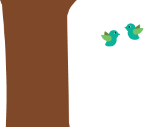

Dit is de kruinlaag.
Hier vind je hoge bomen zoals Linde, Wilg en Esdoorn
Voedselbossen zijn niet alleen mooi, maar ook super goed voor de vogels, insecten en kleine zoogdieren die in jouw buurt leven
Hier leven lagere bomen en hoge struiken zoals Meidoorn, Vlier en Gele Karnoeltjes
Hier leven lage struiken zoals Braam, Framboos en Duindoorn
De kruidlaag bevat allerlei soorten laagblijvende planten, zoals aardbeien, bieslook en lenteui
Elk van deze lagen bevat planten met andere wortellengtes.
Hierdoor stelen geen van de planten voedingstoffen van elkaar, en kan er duurzaam en gevarieerd landbouw gedaan worden!